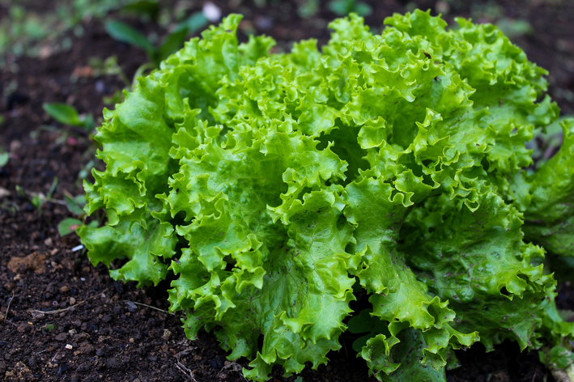

🌱 Minha Horta
Planta cultivada

🥬 Alface
Lactuca sativa
📅 Data de plantio: 05/08/2026
Sobre a cultura
A alface é uma hortaliça cultivada principalmente por suas folhas e bastante utilizada na alimentação.

Lactuca sativa
📅 Data de plantio: 05/08/2026
A alface é uma hortaliça cultivada principalmente por suas folhas e bastante utilizada na alimentação.